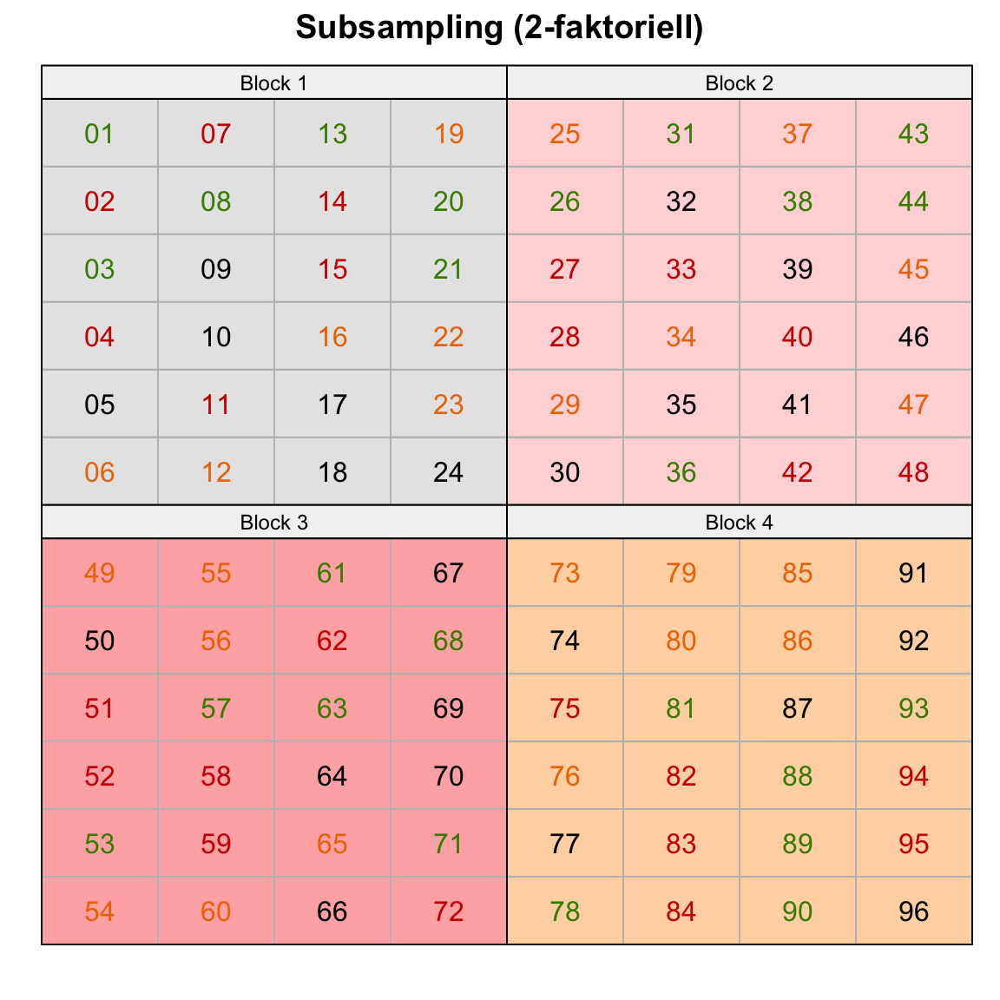

pacman::p_load(tidyverse, magrittr, agricolae, dae, desplot,
conflicted)
conflict_prefer("select", "dplyr")
conflict_prefer("filter", "dplyr")
conflict_prefer("mutate", "dplyr")
conflict_prefer("set_names", "magrittr")
cbbPalette <- c("#999999", "#E69F00", "#56B4E9", "#009E73",
"#F0E442", "#0072B2", "#D55E00", "#CC79A7")57 Fortgeschrittene Designs
Version vom August 14, 2023 um 20:05:13

Ein Teil der Beispiele basiert auf DSFAIR von P. Schmidt und wurde von mir angepasst und vereinfacht. Hier findet sich auch weiterführende Literatur und weitere Beispiele.
Im Weiteren schauen wir uns auch das R Paket agricolae mit Beispielen von Experimental Designs with agricolae genauer einmal an.
In diesem Kapitel wollen wir uns mit der Erstellung von komplexeren experimentellen Designs beschäftigen.
Auf ein Wort zum Umfang des Kapitels
Ich werde mich in diesem Kapitel für das Erste auf die wichtigen experimentellen Design beschränken. Wenn sich aus deer Lehre oder Beratungstätigkeit noch Bedarf an weiteren experimentellen Designs ergibt, werde ich die Designs entsprechend ergänzen. Insbesondere hier gilt, dass DSFAIR einen sehr umfangreichen Überblick liefert.
Wenn dir ein experimentelles Design fehlt, dann schreibe mir gerne eine Mail und ich schaue, dass ich das experimentelle Design ergänze.
In der Abbildung 57.1 sehen wir einmal die Übersicht über die drei häufigsten komplexeren experimentellen Designs mit dem RCBD (3-faktoriell), dem Split plot Design (3-faktoriell) sowie dem Subsampling eines RCBD (2-faktoriell). Die drei experimentellen Designs werden immer mal wieder etwas durcheinander gewirbelt.



57.1 Genutzte R Pakete
Wir wollen folgende R Pakete in diesem Kapitel nutzen.
Am Ende des Kapitels findest du nochmal den gesamten R Code in einem Rutsch zum selber durchführen oder aber kopieren.
57.2 Randomized complete block design (RCBD, 3-faktoriell)
\[ y \sim \overbrace{trt}^{f_1} + \underbrace{block}_{f_2} + \overbrace{location}^{f_3} \]
57.2.1 … mit expand_grid()
three_fct_long_tbl <- expand_grid(location = 1:2, trt = 1:4, block = 1:4) %>%
mutate(location = factor(location, labels = c("north", "south")),
trt = factor(trt, labels = c("ctrl", "A", "B", "C")),
block = factor(block, labels = as.roman(1:4)),
id = sample(1:n()))
three_fct_long_tbl# A tibble: 32 × 4
location trt block id
<fct> <fct> <fct> <int>
1 north ctrl I 17
2 north ctrl II 9
3 north ctrl III 11
4 north ctrl IV 32
5 north A I 21
6 north A II 23
7 north A III 1
8 north A IV 8
9 north B I 24
10 north B II 29
# ℹ 22 more rowsthree_fct_wide_tbl %>%
write_xlsx("template_sheet.xlsx")
57.2.2 … mit agricolae
trt_fac1_soil <- str_c("soil_", 1:4)
n_trt_fac1_soil <- n_distinct(trt_fac1_soil)
trt_fac2_fert <- str_c("fe_", 1:6)
n_trt_fac2_fert <- n_distinct(trt_fac2_fert)
n_rep <- 4rcbd_fac3_obj <- design.ab(trt = c(n_trt_fac2_fert, n_trt_fac1_soil),
design = "rcbd",
r = n_rep,
seed = 42)rcbd_fac3_book_tbl <- rcbd_fac3_obj$book %>%
bind_cols(expand.grid(rows = 1:n_trt_fac2_fert,
cols = 1:(n_trt_fac1_soil*n_rep))) %>%
mutate(trt_fac2_fert = str_c("fe_", A),
trt_fac1_soil = str_c("soil_", B),
block = paste0("Block ", block)) %>%
select(block, fert = trt_fac2_fert, soil = trt_fac1_soil, rows, cols)Kein sketch, wenn man ihn braucht.
desplot(block ~ cols + rows | block, flip = TRUE,
out1 = rows, out1.gpar = list(col = "grey", lty = 1),
out2 = cols, out2.gpar = list(col = "grey", lty = 1),
text = fert, cex = 1, shorten = "no", col = soil,
data = rcbd_fac3_book_tbl,
main = "Randomized complete block design (3-faktoriell)",
show.key = FALSE, key.cex = 0.5)
57.2.3 … mit dae
57.3 Split plot design
57.3.1 … mit agricolae
trt_fac1_soil <- str_c("soil_", 1:4)
n_trt_fac1_soil <- n_distinct(trt_fac1_soil)
trt_fac2_fert <- str_c("fe_", 1:6)
n_trt_fac2_fert <- n_distinct(trt_fac2_fert)
n_rep <- 4Achtung, unbedingt serie = 0 als Option nutzen, sondt klappt es nicht mit der Option die plots gleich den Spalten cols zu setzen. Ja, ich weiß, ist alles super suboptimal.
splitplot_obj <- design.split(trt1 = trt_fac1_soil,
trt2 = trt_fac2_fert,
r = n_rep,
seed = 42, serie = 0)Leider gibt es kein sketch-Objekt gerade hier wo man eins gebrauchen könnte.
splitsplot_book_tbl <- splitplot_obj$book %>%
mutate(block = paste0("Block ", block),
cols = plots,
rows = as.numeric(splots)) %>%
select(block, fert = trt_fac2_fert, soil = trt_fac1_soil, rows, cols)desplot(block ~ cols + rows | block, flip = TRUE,
out1 = rows, out1.gpar = list(col = "grey", lty = 1),
out2 = cols, out2.gpar = list(col = "grey", lty = 1),
text = fert, cex = 1, shorten = "no", col = soil,
data = splitsplot_book_tbl ,
main = "Split plot design (3-faktoriell)",
show.key = FALSE)
57.3.2 … mit dae

desplot()
designGGplot().57.4 Subsampling
57.4.1 … mit expand_grid()
57.4.2 … mit agricolae
57.4.3 … mit dae
57.5 Incomplete block design
57.5.1 … mit expand_grid()
57.5.2 … mit agricolae
trt <- c("A", "B", "C", "D", "E" )
k <- 4
outdesign <- design.bib(trt,k, seed=543, serie=2)
Parameters BIB
==============
Lambda : 3
treatmeans : 5
Block size : 4
Blocks : 5
Replication: 4
Efficiency factor 0.9375
<<< Book >>>book5 <- outdesign$book
book5 plots block trt
1 101 1 B
2 102 1 C
3 103 1 E
4 104 1 A
5 201 2 C
6 202 2 D
7 203 2 B
8 204 2 A
9 301 3 A
10 302 3 D
11 303 3 E
12 304 3 B
13 401 4 E
14 402 4 C
15 403 4 D
16 404 4 B
17 501 5 D
18 502 5 C
19 503 5 E
20 504 5 Aoutdesign$sketch [,1] [,2] [,3] [,4]
[1,] "B" "C" "E" "A"
[2,] "C" "D" "B" "A"
[3,] "A" "D" "E" "B"
[4,] "E" "C" "D" "B"
[5,] "D" "C" "E" "A"